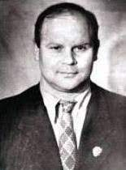

|  |
Анатолий Аркадьевич Харлампиев (29 октябряя 1906, Смоленск, Россия - 16 апреля 1979, Москва, СССР) - исследователь боевых искусств мира и национальных видов борьбы народов СССР, один из создателей борьбы самбо (его предшественниками в деле создания самбо были Виктор Афанасьевич Спиридонов и Василий Сергеевич Ощепков). Заслуженный мастер спорта СССР, заслуженный тренер СССР.
|